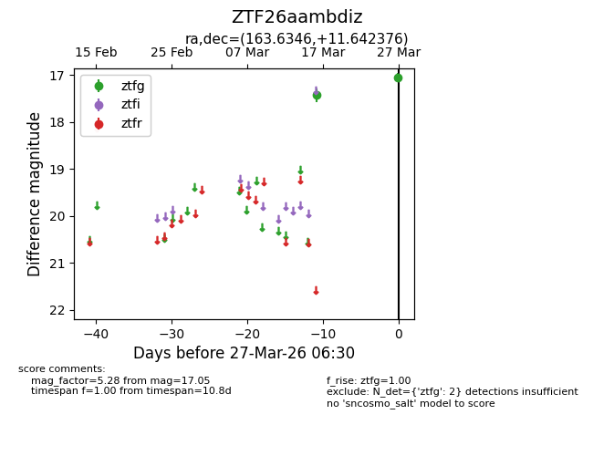
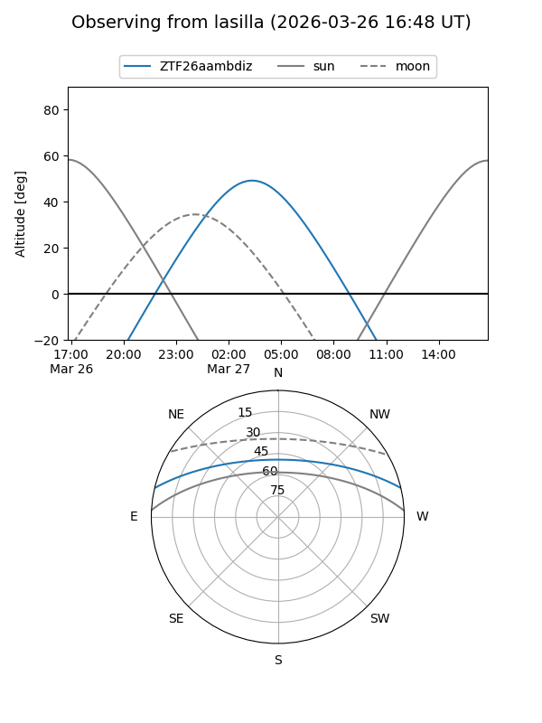
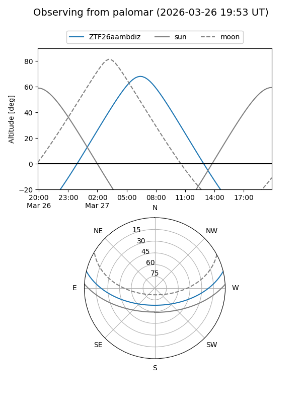

ZTF26aambdiz
Target ZTF26aambdiz at 2026-03-27 06:33
Aliases and brokers:
FINK: link
Lasair: link
ALeRCE: link
alt names
ZTF26aambdiz (ztf,fink_ztf)
Coordinates:
equatorial (ra, dec) = 163.6346,+11.64238
equatorial (HMS+DMS) = 10:54:32.31,+11:38:32.55
galactic (l, b) = (236.6561,+58.51103)
Flags:
Photometry:
last ztfg=17.05
2 ztfg detections
Lightcurve

Visibility


Additional plots